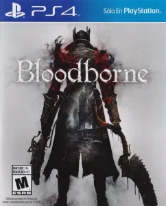
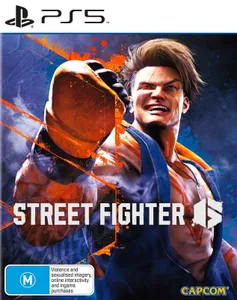
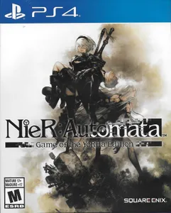
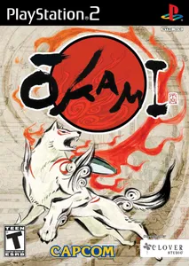
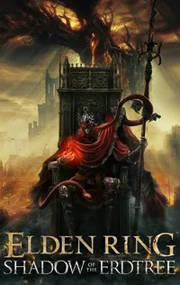

3 Types of Lists by Judel Mabutas
Citites To Visit
- Tokyo, Japan
- Prague, Czech Republic
- Chongqing, China
- New York, USA
- Paris, France
Recent Favorite Foods
Some Game Recommendations
-

- - Engaging and challenging game with horrifying inhabitants in a lovecraftian based world.
-

- - Industry standard fighting game good for beginners and pros alike with tons of content for the genre.
-

- - Unorthodox storytelling only possible in video game form based on many philospphical themes with fast action combat.
-

- - Adventure game with a sumi-e cell shaded visual style where you can "brush" to interact with the world and fight enemies.
-

- - Open world game with a plethora of challenging enemies to fight and many well designed dungeons to explore in a dark fantasy world.